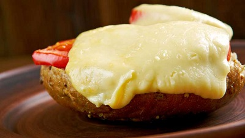

Cheese is a remarkably versatile food, available in literally hundreds of varieties with different flavors and textures.
Welsh Rarebit
Welsh Rarebit is a savory dish made from melted cheese, often Cheddar, on toasted bread, and a variety of other ingredients such as mustard, egg, or bacon. Here is on take on this classic.
Ingredients
Ingredient
Quantity
Bread
2 medium slices
Butter
For bread
Grated Cheddar
1.5 handfuls
Beer
One splash
Wholegrain mustard
One dollop
Pepper
To taste

Instructions
Lightly toast the bread
Place on a baking tray, and spread with butter.
Add the grated Cheddar cheese and 2 tablespoons of beer to a saucepan. Place the saucepan over a medium heat, and stir the cheese continuously until it has melted. Add a teaspoon of wholegrain mustard and grind in a little pepper. Keep stirring
When thick and smooth, pour over each piece of toast spreading it to the edges to stop the toast from burning.
Place under the grill for a couple of minutes or until golden brown.